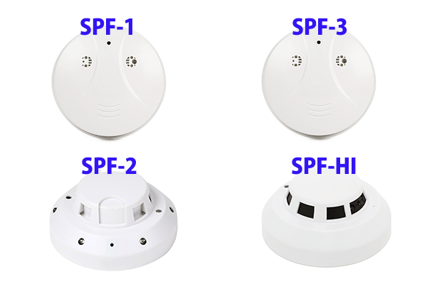

火災報知器を実際に取り付けて撮影してみました！

日に日に寒さが厳しくなってきましたね！
どんどん寒くなり、紅葉が見ごろの場所も増えてきました！
寒い中での紅葉狩りも季節を感じられて素敵ですよね！
皆様はこの秋どのようにお過ごしでしょうか。

さて、今回のブログのテーマは
「火災報知器を実際に取り付けて撮影してみました！」・・です！
当店では商品それぞれに実際に撮影される動画のサンプルとして、
お花を撮影した動画をアップしています。
しかしながら、火災報知器は天井に取り付けて撮影するもの。
その為、「設置したときにどんな角度で撮影されるのかイメージがわかない！」
というお問い合わせを頂く事が多々ございます。
そんな疑問を少しでも解消しよう！というわけで
実際に天井に取り付けて撮影を行いましたのでご紹介いたします！
当店で販売している火災報知器型カメラは、
現在≪SPF-1≫、≪SPF-2≫、≪SPF-3≫、≪SPF-HI≫の4種類！

この4つの商品を実際に天井に設置し撮影をしました。
今回の撮影では床から天井までの高さが約2m40㎝となります。
火災報知器型カメラが設置してある位置と今回の被写体の位置を確認頂ける写真と、
実際に火災報知器型カメラにて撮影された映像を併せてご確認ください！
まずは、≪SPF-1≫≪SPF-3≫からご紹介いたします。
上記2商品は同じ設置場所に取付けて撮影しています。
この2商品のカメラの位置は天井に取り付けると真下を撮影する向きに搭載されていますので、
下の写真のように、撮影したい場所の真上に設置することになります。
そして実際に撮影した映像がこちらです！！ ↓ ↓
【SPF-1】
【SPF-3】
設置してそのすぐ真下が撮影出来ますので、ココを撮りたい！と思った場所を狙って撮影可能！ ピンポイントで撮影したい場所が有る方にオススメの商品ですね♪
続いて、≪SPF-2≫をご紹介いたします。
≪SPF-2≫の設置場所は以下の写真の位置になります。
こちらの商品は上記の2商品(SPF-1,3)とは異なり、商品を天井に設置した場合
斜め45度あたりを撮影する位置にカメラレンズが搭載されておりますので、
被写体から少し離れた位置に設置して頂く必要があります。
それでは実際に撮影した映像をご覧ください！！ ↓ ↓
【SPF-2】
続いては、当店火災報知器型カメラで一番人気の≪SPF-HI≫！
こちらの商品も≪SPF-2≫と同じで、商品を天井に設置すると斜め45度あたりを撮影する位置に
カメラレンズが搭載されている為、今回の被写体であるお花を撮影したい場合、
以下の写真のような位置に設置するとカメラレンズから被写体がずれることなく撮影できます。

撮影した映像がこちら！！ ↓ ↓
【SPF-HI】
≪SPF-2≫と≪SPF-HI≫は角度をつけて撮影を行うので、
広い範囲が撮影されていることがお分かり頂けるかと思います！
お部屋全体を撮影したい！と言うご希望のある方にピッタリの商品です！
いかがでしたか？イメージはわきましたでしょうか？？
火災報知器型はお家の防犯対策に役立つと、お客様からとても人気がある商品です。
設置の仕方によって幅広い用途にお使いいただけるので、参考になればうれしいです！
今回紹介した火災報知器型の商品詳細はこちらからご覧いただけます ↓ ↓
SPF-1
SPF-2
SPF-3
SPF-HI
商品ごとに機能などが異なりますので、ショップ内各商品ページで比較しながら、
用途にあった商品を探してみてくださいね！！
勿論、比べてみたけどよくわからない・・なんて時にはどうぞお気軽にご相談くださいませ！
今回のブログはいかがでしたでしょうか・・・？ご不明点がある場合には、いつでもご連絡下さい！
メールやお問合せフォームからは24時間お問い合わせを受付中！
また、お電話でのお問い合わせも時間は限られておりますが受付中です！
当店スタッフが、誠意を持って対応致します・・！頑張ります・・！

ご相談・ご質問はこちらから!!（店舗サイトのお問合せページへ飛びます）
mail：shop@spy-online.jp
tel：042-719-3319 (対応時間10：00～12：00、13：00～17：00)
それでは今回はこの辺で・・
また近々お会いしましょう・・！(＾ ＾)